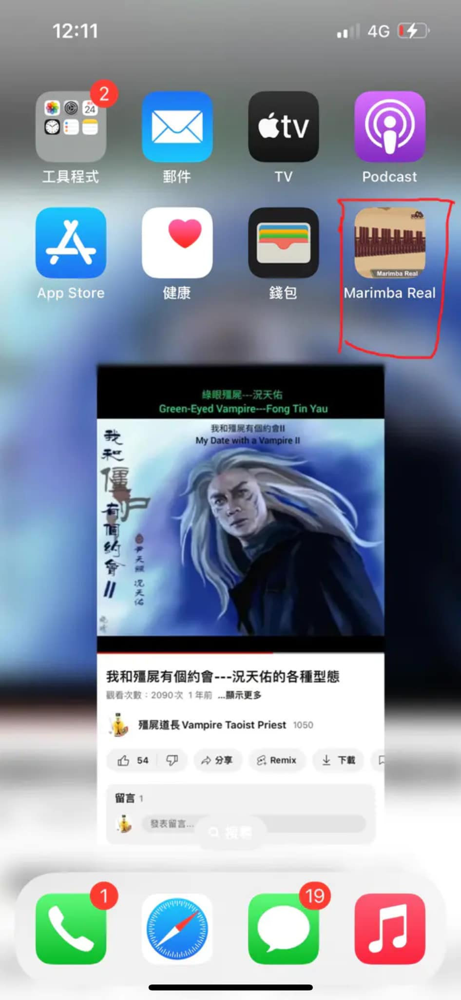

點擊上方的語言選單以切換語言
演奏音樂是我平日的樂趣之一，且除了實體鋼琴以外，我也會透過marimba real、perfect piano這兩款數位平台演奏。因此我成立這個專案的目的是向各位展示我在演奏音樂方面的水平，同時也順便介紹Marimba Real與Perfect Piano這兩款App背後的計算機原理。
此頁面為首頁，主題是簡單介紹Marimba Real與Perfect Piano兩款數位樂器的使用方式與使用後的心得感想。
想進入其他主題的連結，請點右上方的三條線。
我要先和各位音樂介紹一款我覺得很有趣的樂器 App —— Marimba Real（如下圖紅框所示）：
📱 Marimba Real App 畫面：

這款 App 提供了五種打擊樂器模擬，分別是：
📱 使用者可自訂八度、琴鍵數量、樂器模擬，但是必須關閉靜音模式才能發出聲音：
我自己本身是學鋼琴的（想看我彈鋼琴的朋友可以在小紅書上關注我），但由於這些打擊樂器的琴鍵排列和鋼琴一樣，所以蠻容易上手。
👉 優缺點簡評：
📱 講解完Marimba Real後，接下來是《Perfect Piano》的部分 —— 如我剛才所說，不管你是否把手機調成靜音模式，它都能彈出聲音。與此同時它也能像《Marimba Real》一樣選擇音色，而且音色種類與可以跨的八度範圍更廣，同時還有單排模式、雙排模式、對彈模式（如下影片所示）：
對於習慣鋼琴鍵盤但想嘗試打擊樂器音色的朋友來說，Marimba Real 是一款不錯的入門工具。如果你對馬林巴、木琴、管鐘等聲音感興趣，不妨也來玩玩看！
當然，如果你想接觸更多音色且在更廣的音域下彈奏，Perfect Piano也是不錯的選擇！